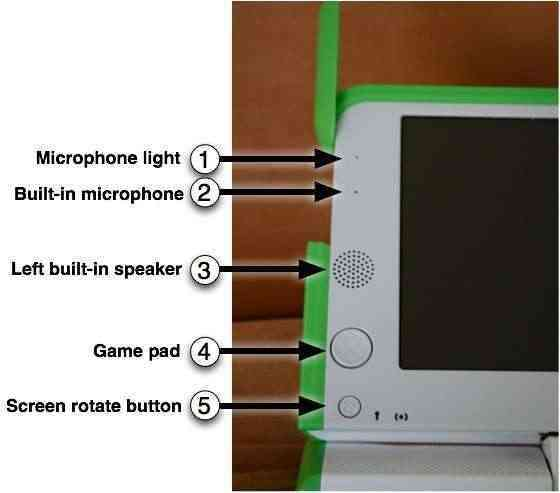
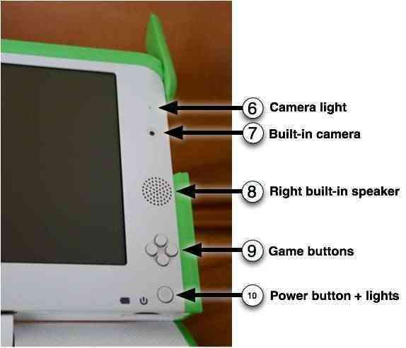
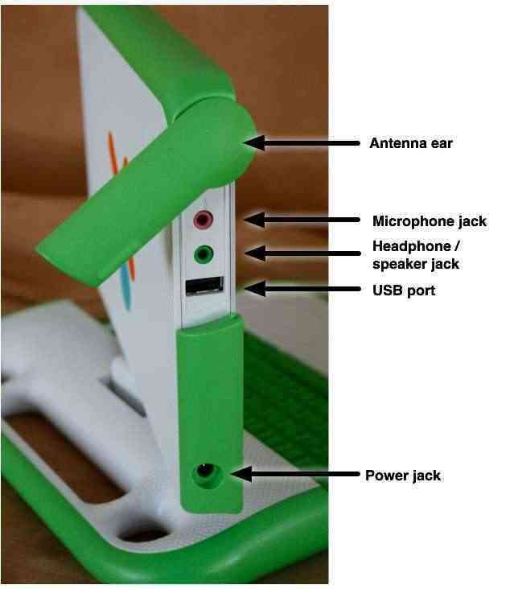
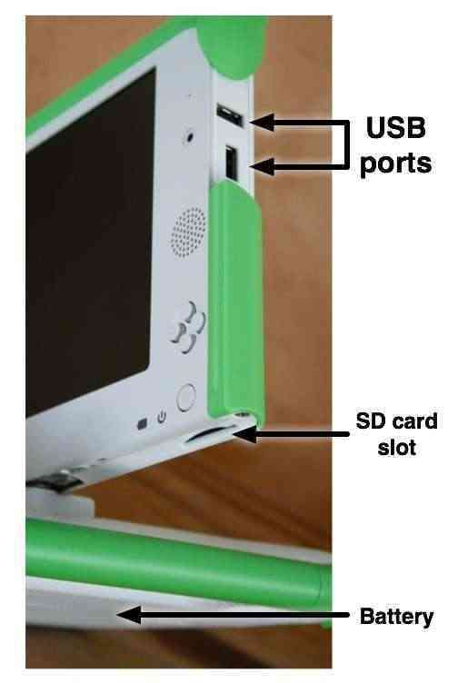

| À propos des ordinateurs | Index | De l'énergie pour votre XO |
Les portables XO possèdent de nombreux équipements incorporés. Cela comprend une caméra, un microphone, des haut-parleurs et des antennes WiFi. Le XO permet aussi d'utiliser des périphériques extérieurs. Cela se fait généralement en branchant ces appareils à des connecteurs (on connaît la plupart de ces connecteurs sous le nom de ports, prises ou fentes).
L'écran fonctionne en mode pleine couleur similaire à l'écran d'autres ordinateurs portables et en mode très basse consommation d'énergie, à ultra-haute résolution noir et blanc, qui lui permet d'être lu à la lumière du soleil.

Un microphone est intégré ; il y a également une prise pour microphone extérieur supportant les sources AC et DC. Pour protéger la vie privée, une LED est placé au-dessus du microphone (1) et s'allume lorsque celui-ci est activé.
Des haut-parleurs stéréo internes, ainsi qu'un amplificateur, permettent de jouer de la musique, des vidéos et tout ce que vous aurez enregistré vous-même. Il y a également une prise pour des écouteurs ou des haut-parleurs externes
Deux jeux de touches à quatre directions servent de contrôleurs de jeu. Puisqu'elles fonctionnent même quand l'écran est replié en mode ebook, le XO devient ainsi une console de jeu indépendante incluant un contrôleur de jeux.
Une touche, située sur le côté de l'écran du XO, permet de modifier l'orientation de l'écran; ainsi l'écran peut être regardé, écran vers le haut, depuis n'importe quelle direction.

Le XO possède une caméra couleur intégrée qui permet d'enregistrer des photographies tout comme des vidéos. Pour protéger la vie privée, une LED, situé en-dessus de la caméra (6), s'allume lorsque celle-ci est utilisée.
Les touches de jeu peuvent être utilisées lorsque l'écran est replié en mode ebook; le XO devient ainsi une console de jeu indépendante. Les touches sont représentées par un Cercle, un Carré, une Coche et un x. Ces touches sont régulièrement utilisées pour les Activités. Par exemple, la touche Cercle peut être utilisée comme déclencheur dans l'Activité Enregistrement.
De gauche à droite : l'indicateur de niveau de batterie puis l'indicateur énergétique puis le bouton de mise en marche.
En plus d'offrir des options uniques de connectivité, le XO peut fonctionner avec une vaste gamme de périphériques externes.

Lorsque les "oreilles" (des antennes sans fil) sont tournées vers le haut, elles fournissent au XO des capacités de connexion très supérieures à celle des ordinateurs portables conventionnels. Lorsqu'elles sont tournées vers le bas, elles protègent les connecteurs de la saleté et agissent comme des loquets.
En plus des haut-parleurs intégrés et du microphone, le XO possède des prises pour des écouteurs et un microphone externes.
Le XO possède trois ports USB externes qui acceptent une grande variété de branchements de périphériques (l'un figure sur la photo ci-dessus, et les deux autres sont situés sous l'autre "oreille").

Le XO est livré avec avec un cordon d'alimentation qui peut être branché dans n'importe quelle prise 110-240 volts avec sortie AC, ceci afin de charger le XO. La prise d'alimentation accepte aussi l'énergie DC d'un panneau solaire pour charger la batterie du XO.
Une fente - située sous l'écran - accepte les cartes mémoire SD pour photos, vidéos ou autres contenus. Tournez l'écran, afin que le coin du côté de votre main gauche soit en dessus du clavier; la fente sera ainsi accessible par en-dessous.
Puisque beaucoup d'enfants de pays en développement vivent hors réseau électrique (dans des lieux avec peu ou pas d'infrastructure énergétique), le XO a été conçu pour être vraiment efficace en termes énergétiques.
| À propos des ordinateurs | Index | De l'énergie pour votre XO |